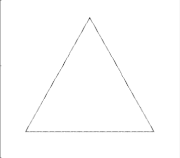

.png)
Mandelbrot es universalmente considerado el padre de la geometría fractal, pero el largo camino hacia su descubrimiento en realidad comenzó muchos años antes del destacado trabajo de este matemático. Ya en el siglo XIX, por ejemplo, importantes matemáticos como Karl Weierstrass, Georg Cantor o Helge von Koch habían estudiado y construido manualmente las primeras curvas fractales sin conocerlas de primera mano ni con ese nombre. En 1872, Weierstrass construyó una de las primeras curvas fractales continuas, pero no derivables en ningún punto, hoy llamada “Función de Weierstrass”. Pocos años después, Cantor sentó las bases de la teoría de conjuntos, que resulta clave para definir las propiedades fractales. Por su parte, Voc Koch elaboró en 1904 el “copo de nieve de Koch”, uno de los primeros fractales creados intencionalmente partiendo de un triángulo equilátero y agregando tres nuevos triángulos equiláteros, uno en cada lado, y así sucesivamente.
Los fractales son, por lo tanto, elementos calificados como semi geométricos (por su irregularidad no pertenecen a la geometría tradicional) que disponen de una estructura esencial que se reitera a distintas escalas. El fractal puede ser creado por el hombre, incluso con intenciones artísticas, aunque también existen estructuras naturales que son fractales (como los copos de nieve).